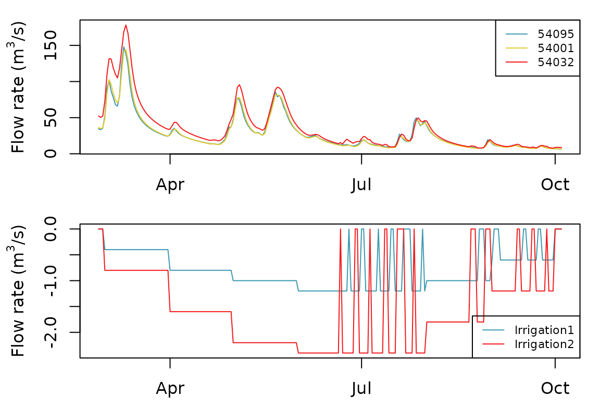

vignettes/V04_Closed-loop_regulated_withdrawal.Rmd
V04_Closed-loop_regulated_withdrawal.Rmd
library(airGRiwrm)
#> Loading required package: airGR
#>
#> Attaching package: 'airGRiwrm'
#> The following objects are masked from 'package:airGR':
#>
#> Calibration, CreateCalibOptions, CreateInputsCrit,
#> CreateInputsModel, CreateRunOptions, RunModelStarting from the network and the calibration set in the vignette “V02_Calibration_SD_model”, we add 2 intake points for irrigation.
The following code chunk resumes the procedure of the vignette “V02_Calibration_SD_model”:
data(Severn)
nodes <- Severn$BasinsInfo[, c("gauge_id", "downstream_id", "distance_downstream", "area")]
nodes$model <- "RunModel_GR4J"The intake points are located:
We have to add this 2 nodes in the network:
nodes <- rbind(
nodes,
data.frame(
gauge_id = c("Irrigation1", "Irrigation2"),
downstream_id = c("54001", "54032"),
distance_downstream = c(35, 10),
model = NA,
area = NA
)
)
nodes
#> gauge_id downstream_id distance_downstream area model
#> 1 54057 <NA> NA 9885.46 RunModel_GR4J
#> 2 54032 54057 15 6864.88 RunModel_GR4J
#> 3 54001 54032 45 4329.90 RunModel_GR4J
#> 4 54095 54001 42 3722.68 RunModel_GR4J
#> 5 54002 54057 43 2207.95 RunModel_GR4J
#> 6 54029 54032 32 1483.65 RunModel_GR4J
#> 7 Irrigation1 54001 35 NA <NA>
#> 8 Irrigation2 54032 10 NA <NA>And we create the GRiwrm object from this new
network:
griwrmV04 <- CreateGRiwrm(nodes, list(id = "gauge_id", down = "downstream_id", length = "distance_downstream"))
plot(griwrmV04)Blue nodes figure upstream basins (rainfall-runoff modeling only) and green nodes figure intermediate basins, coupling rainfall-runoff and hydraulic routing modeling. Nodes in red color are direct injection points (positive or negative flow) in the model.
It’s important to notice that even if the points “Irrigation1” and “Irrigation2” are physically located on a single branch of the Severn river as well as gauging stations “54095”, “54001” and “54032”, nodes “Irrigation1” and “Irrigation2” are not represented on the same branch in this conceptual model. Consequently, with this network configuration, it is not possible to know the value of the flow in the Severn river at the “Irrigation1” or “Irrigation2” nodes. These values are only available in nodes “54095”, “54001” and “54032” where rainfall-runoff and hydraulic routing are actually modeled.
Irrigation1 covers an area of 15 km² and Irrigation2 covers an area of 30 km².
The objective of these irrigation systems is to cover the rainfall deficit (Burt et al. 1997) with 80% of success. Below is the calculation of the 8th decile of monthly water needed given meteorological data of catchments “54001” and “54032” (unit mm/day) :
# Formatting climatic data for CreateInputsModel (See vignette V01_Structure_SD_model for details)
BasinsObs <- Severn$BasinsObs
DatesR <- BasinsObs[[1]]$DatesR
PrecipTot <- cbind(sapply(BasinsObs, function(x) {x$precipitation}))
PotEvapTot <- cbind(sapply(BasinsObs, function(x) {x$peti}))
Qobs <- cbind(sapply(BasinsObs, function(x) {x$discharge_spec}))
Precip <- ConvertMeteoSD(griwrmV04, PrecipTot)
PotEvap <- ConvertMeteoSD(griwrmV04, PotEvapTot)
# Calculation of the water need at the sub-basin scale
dailyWaterNeed <- PotEvap - Precip
dailyWaterNeed <- cbind(as.data.frame(DatesR), dailyWaterNeed[,c("54001", "54032")])
monthlyWaterNeed <- SeriesAggreg(dailyWaterNeed, "%Y%m", rep("mean",2))
monthlyWaterNeed <- SeriesAggreg(dailyWaterNeed, "%m", rep("q80",2))
monthlyWaterNeed[monthlyWaterNeed < 0] <- 0
monthlyWaterNeed$DatesR <- as.numeric(format(monthlyWaterNeed$DatesR,"%m"))
names(monthlyWaterNeed)[1] <- "month"
monthlyWaterNeed <- monthlyWaterNeed[order(monthlyWaterNeed$month),]
monthlyWaterNeed
#> month 54001 54032
#> 25 1 0.2400000 0.2365627
#> 1721 2 0.5918416 0.6188486
#> 2804 3 1.2376475 1.2384480
#> 3745 4 2.1809664 2.2036046
#> 4721 5 3.0230456 3.0555408
#> 5716 6 3.4775922 3.5096402
#> 6722 7 3.5305228 3.5769480
#> 7644 8 2.6925228 2.7331421
#> 8637 9 1.8323644 1.8489218
#> 9588 10 0.8626301 0.8867260
#> 10554 11 0.2707842 0.2497664
#> 11491 12 0.1488753 0.1665834We restrict the irrigation season between March and September As a consequence, the crop requirement can be expressed in m3/s as follows:
irrigationObjective <- monthlyWaterNeed
# Conversion in m3/day
irrigationObjective$"54001" <- monthlyWaterNeed$"54001" * 15 * 1E3
irrigationObjective$"54032" <- monthlyWaterNeed$"54032" * 30 * 1E3
# Irrigation period between March and September
irrigationObjective[-seq(3,9),-1] <- 0
# Conversion in m3/s
irrigationObjective[,c(2,3)] <- round(irrigationObjective[,c(2,3)] / 86400, 1)
irrigationObjective$total <- rowSums(irrigationObjective[,c(2,3)])
irrigationObjective
#> month 54001 54032 total
#> 25 1 0.0 0.0 0.0
#> 1721 2 0.0 0.0 0.0
#> 2804 3 0.2 0.4 0.6
#> 3745 4 0.4 0.8 1.2
#> 4721 5 0.5 1.1 1.6
#> 5716 6 0.6 1.2 1.8
#> 6722 7 0.6 1.2 1.8
#> 7644 8 0.5 0.9 1.4
#> 8637 9 0.3 0.6 0.9
#> 9588 10 0.0 0.0 0.0
#> 10554 11 0.0 0.0 0.0
#> 11491 12 0.0 0.0 0.0We assume that the efficiency of the irrigation systems is equal to 50% as proposed by Seckler, Molden, and Sakthivadivel (2003). as a consequence, the flow demand at intake for each irrigation system is as follows (unit: m3/s):
# Application of the 50% irrigation system efficiency on the water demand
irrigationObjective[,seq(2,4)] <- irrigationObjective[,seq(2,4)] / 0.5
# Display result in m3/s
irrigationObjective
#> month 54001 54032 total
#> 25 1 0.0 0.0 0.0
#> 1721 2 0.0 0.0 0.0
#> 2804 3 0.4 0.8 1.2
#> 3745 4 0.8 1.6 2.4
#> 4721 5 1.0 2.2 3.2
#> 5716 6 1.2 2.4 3.6
#> 6722 7 1.2 2.4 3.6
#> 7644 8 1.0 1.8 2.8
#> 8637 9 0.6 1.2 1.8
#> 9588 10 0.0 0.0 0.0
#> 10554 11 0.0 0.0 0.0
#> 11491 12 0.0 0.0 0.0In the UK, abstraction restrictions are driven by Environmental Flow Indicator (EFI) supporting Good Ecological Status (GES) (Klaar et al. 2014). Abstraction restriction consists in limiting the proportion of available flow for abstraction in function of the current flow regime (Reference taken for a river that is highly sensitive to abstraction classified “ASB3”).
restriction_rule <- data.frame(quantile_natural_flow = c(.05, .3, 0.5, 0.7),
abstraction_rate = c(0.1, 0.15, 0.20, 0.24))The control of the abstraction will be done at the gauging station downstream all the abstraction locations (node “54032”). So we need the flow corresponding to the quantiles of natural flow and flow available for abstraction in each case.
quant_m3s32 <- quantile(
Qobs[,"54032"] * griwrmV04[griwrmV04$id == "54032", "area"] / 86.4,
restriction_rule$quantile_natural_flow,
na.rm = TRUE
)
restriction_rule_m3s <- data.frame(
threshold_natural_flow = quant_m3s32,
abstraction_rate = restriction_rule$abstraction_rate
)
matplot(restriction_rule$quantile_natural_flow,
cbind(restriction_rule_m3s$threshold_natural_flow,
restriction_rule$abstraction_rate * restriction_rule_m3s$threshold_natural_flow,
max(irrigationObjective$total)),
log = "x", type = "l",
main = "Quantiles of flow on the Severn at Saxons Lode (54032)",
xlab = "quantiles", ylab = "Flow (m3/s)",
lty = 1, col = rainbow(3, rev = TRUE)
)
legend("topleft", legend = c("Natural flow", "Abstraction limit", "Irrigation max. objective"),
col = rainbow(3, rev = TRUE), lty = 1)The water availability or abstraction restriction depending on the natural flow is calculated with the function below:
# A function to enclose the parameters in the function (See: http://adv-r.had.co.nz/Functional-programming.html#closures)
getAvailableAbstractionEnclosed <- function(restriction_rule_m3s) {
function(Qnat) approx(restriction_rule_m3s$threshold_natural_flow,
restriction_rule_m3s$abstraction_rate,
Qnat,
rule = 2)
}
# The function with the parameters inside it :)
getAvailableAbstraction <- getAvailableAbstractionEnclosed(restriction_rule_m3s)
# You can check the storage of the parameters in the function with
as.list(environment(getAvailableAbstraction))
#> $restriction_rule_m3s
#> threshold_natural_flow abstraction_rate
#> 5% 15.09638 0.10
#> 30% 30.19276 0.15
#> 50% 50.85096 0.20
#> 70% 90.57828 0.24The figure above shows that restrictions will be imposed to the
irrigation perimeter if the natural flow at Saxons Lode
(54032) is under around 20 m3/s.
Applying restriction on the intake on a real field is always challenging since it is difficult to regulate day by day the flow at the intake. Policy makers often decide to close the irrigation abstraction points in turn several days a week based on the mean flow of the previous week.
The number of authorized days per week for irrigation can be calculated as follows. All calculations are based on the mean flow measured the week previous the current time step. First, the naturalized flow is equal to
with:
Available flow for abstraction is:
with the availability function calculated from quantiles of natural flow and related restriction rates.
The flow planned for irrigation is then:
with the irrigation objective flow.
The number of days for irrigation per week is then equal to:
with the function that returns the largest integers not greater than
The rotation of restriction days between the 2 irrigation perimeters is operated as follows:
restriction_rotation <- matrix(c(5,7,6,4,2,1,3,3,1,2,4,6,7,5), ncol = 2)
m <- do.call(
rbind,
lapply(seq(0,7), function(x) {
b <- restriction_rotation <= x
rowSums(b)
})
)
# Display the planning of restriction
image(1:ncol(m), 1:nrow(m), t(m), col = heat.colors(3, rev = TRUE),
axes = FALSE, xlab = "week day", ylab = "number of restriction days",
main = "Number of closed irrigation perimeters")
axis(1, 1:ncol(m), unlist(strsplit("SMTWTFS", "")))
axis(2, 1:nrow(m), seq(0,7))
for (x in 1:ncol(m))
for (y in 1:nrow(m))
text(x, y, m[y,x])As for the previous model, we need to set up an
GRiwrmInputsModel object containing all the model
inputs:
# Flow time series are needed for all direct injection nodes in the network
# even if they may be overwritten after by a controller
QinfIrrig <- data.frame(Irrigation1 = rep(0, length(DatesR)),
Irrigation2 = rep(0, length(DatesR)))
# Creation of the GRiwrmInputsModel object
IM_Irrig <- CreateInputsModel(griwrmV04, DatesR, Precip, PotEvap, QinfIrrig)
#> CreateInputsModel.GRiwrm: Processing sub-basin 54095...
#> CreateInputsModel.GRiwrm: Processing sub-basin 54002...
#> CreateInputsModel.GRiwrm: Processing sub-basin 54029...
#> CreateInputsModel.GRiwrm: Processing sub-basin 54001...
#> CreateInputsModel.GRiwrm: Processing sub-basin 54032...
#> CreateInputsModel.GRiwrm: Processing sub-basin 54057...The simulation is piloted through a Supervisor that can
contain one or more Controller. This supervisor will work
with a cycle of 7 days: the measurement are taken on the last 7 days and
decisions are taken for each time step for the next seven days.
sv <- CreateSupervisor(IM_Irrig, TimeStep = 7L)We need a controller that measures the flow at Saxons Lode (“54032”) and adapts on a weekly basis the abstracted flow at the two irrigation points. The supervisor will stop the simulation every 7 days and will provide to the controller the last 7 simulated flow values at Saxons Lode (“54032”) (measured variables) and the controller should provide “command variables” for the next 7 days for the 2 irrigation points.
A control logic function should be provided to the controller. This
control logic function processes the logic of the regulation taking
measured flows as input and returning the “command variables”. Both
measured variables and command variables are of type matrix
with the variables in columns and the time steps in rows.
In this example, the logic function must do the following tasks:
fIrrigationFactory <- function(supervisor,
irrigationObjective,
restriction_rule_m3s,
restriction_rotation) {
function(Y) {
# Y is in m3/day and the basin's area is in km2
# Calculate the objective of irrigation according to the month of the current days of simulation
month <- as.numeric(format(supervisor$ts.date, "%m"))
U <- irrigationObjective[month, c(2,3)] # m3/s
meanU <- mean(rowSums(U))
if (meanU > 0) {
# calculate the naturalized flow from the measured flow and the abstracted flow of the previous week
lastU <- supervisor$controllers[[supervisor$controller.id]]$U # m3/day
Qnat <- (Y - rowSums(lastU)) / 86400 # m3/s
# Maximum abstracted flow available
Qrestricted <- mean(
approx(restriction_rule_m3s$threshold_natural_flow,
restriction_rule_m3s$abstraction_rate,
Qnat,
rule = 2)$y * Qnat
)
# Total for irrigation
QIrrig <- min(meanU, Qrestricted)
# Number of days of irrigation
n <- floor(7 * (1 - QIrrig / meanU))
# Apply days off
U[restriction_rotation[seq(nrow(U)),] <= n] <- 0
}
return(-U * 86400) # withdrawal is a negative flow in m3/day on an upstream node
}
}You can notice that the data required for processing the control
logic are enclosed in the function fIrrigationFactory,
which takes the required data as arguments and returns the control logic
function.
Creating fIrrigation by calling
fIrrigationFactory with the arguments currently in memory
saves these variables in the environment of the function:
fIrrigation <- fIrrigationFactory(supervisor = sv,
irrigationObjective = irrigationObjective,
restriction_rule_m3s = restriction_rule_m3s,
restriction_rotation = restriction_rotation)You can see what data are available in the environment of the function with:
str(as.list(environment(fIrrigation)))
#> List of 4
#> $ supervisor :Classes 'Supervisor', 'environment' <environment: 0x55a9ede2bb68>
#> $ irrigationObjective :'data.frame': 12 obs. of 4 variables:
#> ..$ month: num [1:12] 1 2 3 4 5 6 7 8 9 10 ...
#> ..$ 54001: num [1:12] 0 0 0.4 0.8 1 1.2 1.2 1 0.6 0 ...
#> ..$ 54032: num [1:12] 0 0 0.8 1.6 2.2 2.4 2.4 1.8 1.2 0 ...
#> ..$ total: num [1:12] 0 0 1.2 2.4 3.2 3.6 3.6 2.8 1.8 0 ...
#> $ restriction_rule_m3s:'data.frame': 4 obs. of 2 variables:
#> ..$ threshold_natural_flow: num [1:4] 15.1 30.2 50.9 90.6
#> ..$ abstraction_rate : num [1:4] 0.1 0.15 0.2 0.24
#> $ restriction_rotation: num [1:7, 1:2] 5 7 6 4 2 1 3 3 1 2 ...The supervisor variable is itself an environment which
means that the variables contained inside it will be updated during the
simulation. Some of them are useful for computing the control logic such
as:
supervisor$ts.index: indexes of the current time steps
of simulation (In IndPeriod_Run)supervisor$ts.date: date/time of the current time steps
of simulationsupervisor$controller.id: identifier of the current
controllersupervisor$controllers: the list of
Controller
The controller contains:
CreateController(sv,
ctrl.id = "Irrigation",
Y = "54032",
U = c("Irrigation1", "Irrigation2"),
FUN = fIrrigation)
#> The controller 'Irrigation' has been added to the supervisorFirst we need to create a GRiwrmRunOptions object and
load the parameters calibrated in the vignette
“V02_Calibration_SD_model”:
IndPeriod_Run <- seq(
which(DatesR == (DatesR[1] + 365*24*60*60)), # Set aside warm-up period
length(DatesR) # Until the end of the time series
)
IndPeriod_WarmUp = seq(1,IndPeriod_Run[1]-1)
RunOptions <- CreateRunOptions(IM_Irrig,
IndPeriod_WarmUp = IndPeriod_WarmUp,
IndPeriod_Run = IndPeriod_Run)
ParamV02 <- readRDS(system.file("vignettes", "ParamV02.RDS", package = "airGRiwrm"))For running a model with a supervision, you only need to substitute
InputsModel by a Supervisor in the
RunModel function call.
OM_Irrig <- RunModel(sv, RunOptions = RunOptions, Param = ParamV02)
#> Processing: 0% 10% 20% 30% 40% 50% 60% 70% 80% 90% 100%Simulated flows during irrigation season can be extracted and plot as follows:
Qm3s <- attr(OM_Irrig, "Qm3s")
Qm3s <- Qm3s[Qm3s$DatesR > "2003-02-25" & Qm3s$DatesR < "2003-10-05",]
oldpar <- par(mfrow=c(2,1), mar = c(2.5,4,1,1))
plot(Qm3s[, c("DatesR", "54095", "54001", "54032")], main = "", xlab = "")
plot(Qm3s[, c("DatesR", "Irrigation1", "Irrigation2")], main = "", xlab = "", legend.x = "bottomright")
par(oldpar)We can observe that the irrigation points are alternatively closed some days a week when the flow at node “54032” becomes low.